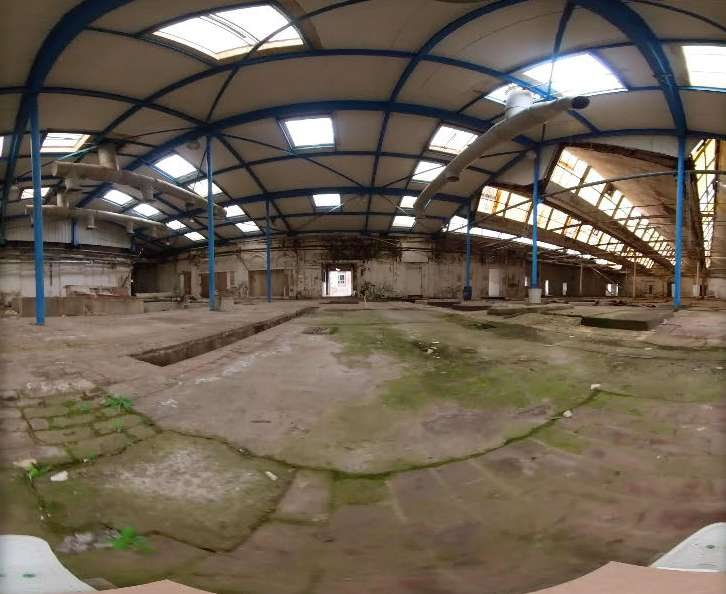

2022
Vidéo 360°
Vidéo 360°
La manufacture de Cosserat était autrefois un fleuron de l'industrie textile française, notamment réputée pour son velours d'Utrecht, dont elle détenait le quasi-monopole au sein du pays. Après la fermeture du site, la manufacture est devenue un espace hors du temps, un espace liminal.
Mais cet état est sur le point de changer : Cosserat va subir de profondes transformations en vue d'une réhabilitation. J'ai donc cherché à produire une archive vidéo. En résulte un système mécanique capable de remplacer le plasticien, pour effectuer des prises de vue dans des secteurs trop dangereux et interdits d'accès aux humains.